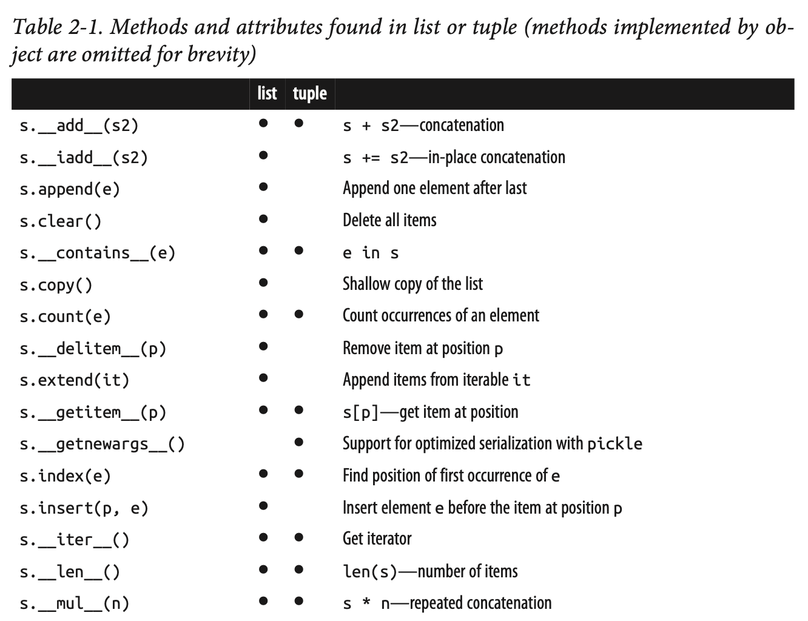
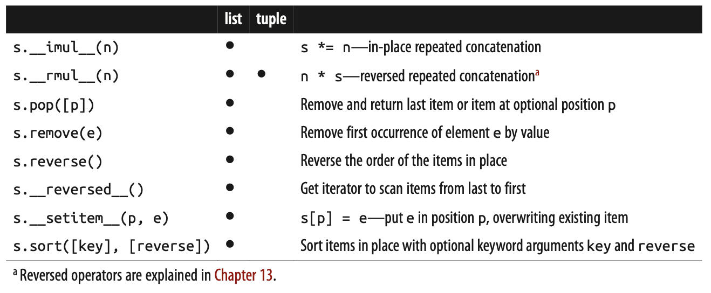

Exercise: Protocol - linked-list
Solution
In python there is not a build in linked list. If you want to use this datastructure, you either have to make it yourself or import a module (where someone else did it for you.).
You should chose the first option: create it yourself.
Definition of a linked list
A linked list consists of Node objects with 2 instance variables (data and next).
1class Node:
2 def __init__(self, data):
3 self.data = data
4 self.next = None
And a LinkedList with 1 instance variable:
1class LinkedList:
2 def __init__(self):
3 self.head = None
You can assign Nodes to the list like:
llist = LinkedList()
llist.head = Node('Data of first Node') # head is a pointer to a Node with data off 'Data of First Node'
llist.head.next = Node('Data of second Node') # next belongs to 'Data of First Node' Node and points to 'Data of second Node' Node.
Task
The Linked List should on a higher level behave like the build in List object. So you could in your interpretor type
>>> help(list)
The underscore methods (__add__ etc.) you can see in the documentation using help(list) should be implemented in your LinkedList (or at least as many as possible)
A description of the implemented methods and their behaviour can be seen here:
 The features described below should for sure be implement.
Make you LinkeList able to tell its length if
len(llist)is called.You should be able to access the lists elements like this
llist[1]andllist[-1]The list should be able to handle slicing syntax
llist[1:4]andllist[-1:-4:-1]The list should be able to add new items using this syntax
llist[3] = Node(3)The llinkedList should be able to return a string representation of its state when calling
str()andrepr()Make the linkedlist able to being added with another linkedlist using the
+operatorMultiply the list x times
llist * 3
Remember that a very good description of these underscore methods can be found in this weeks reading materials.